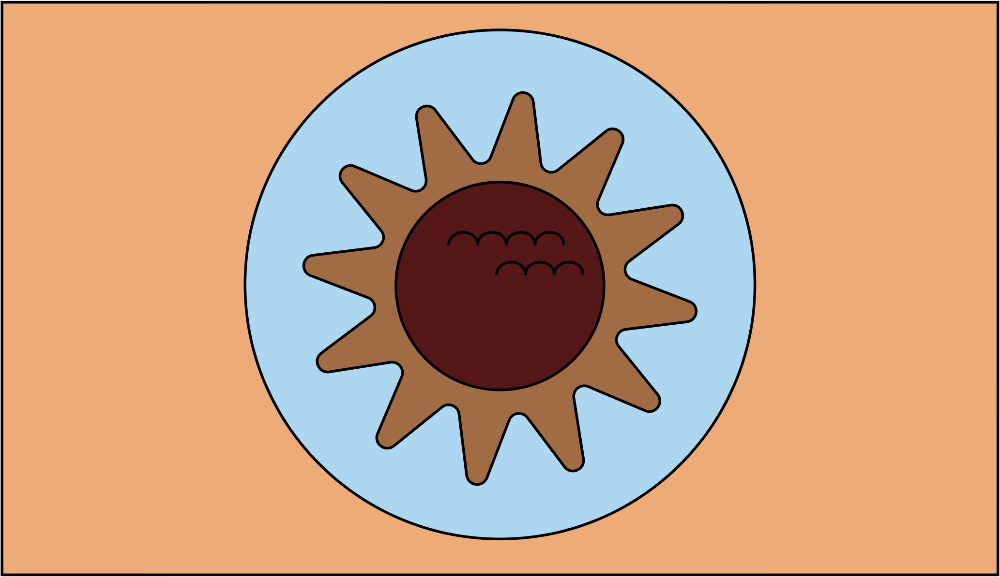
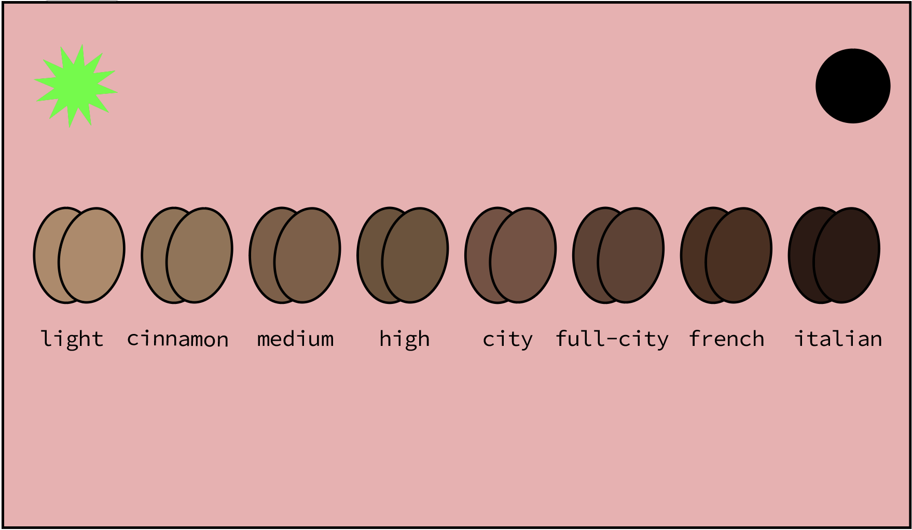
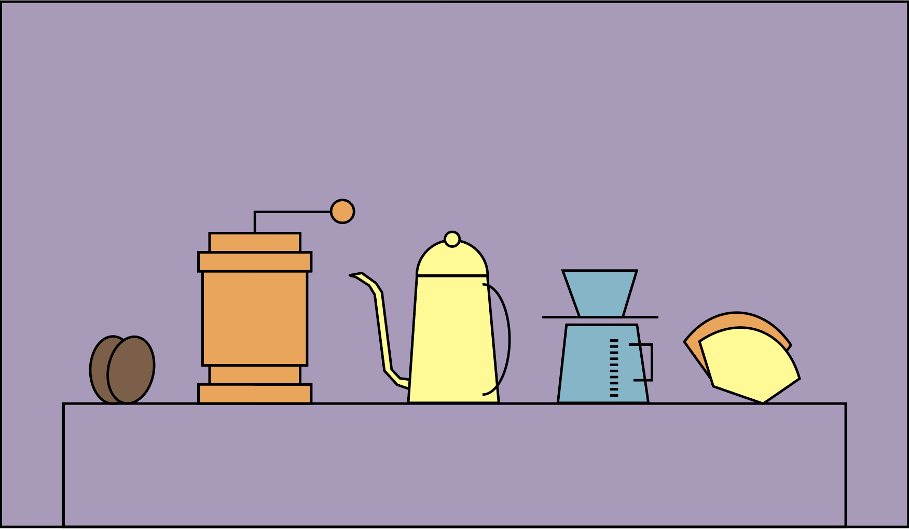
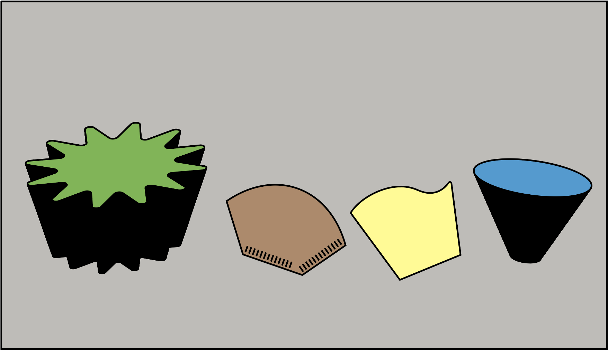
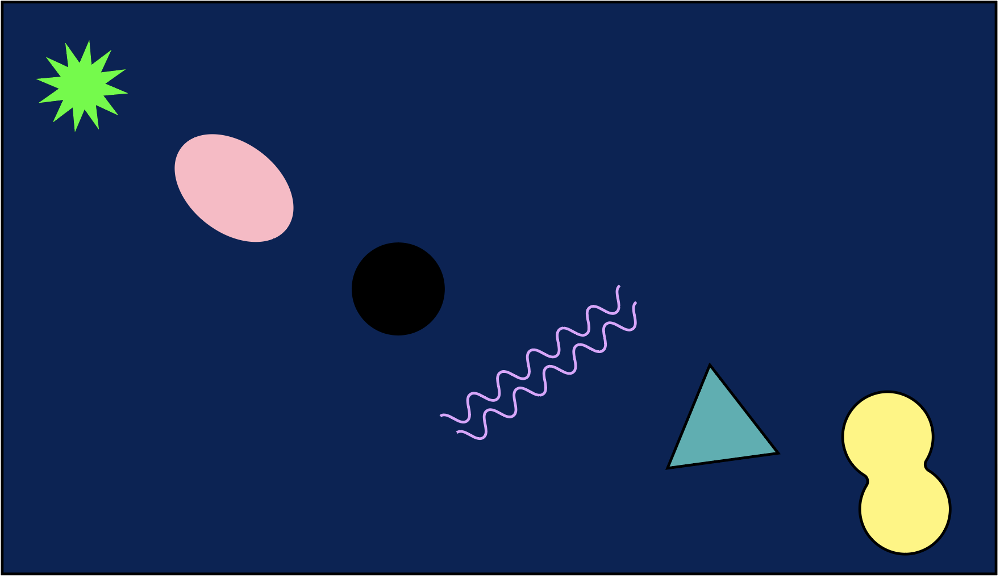
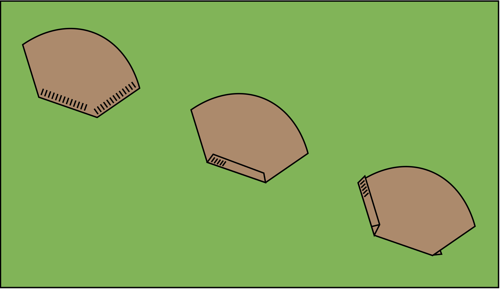
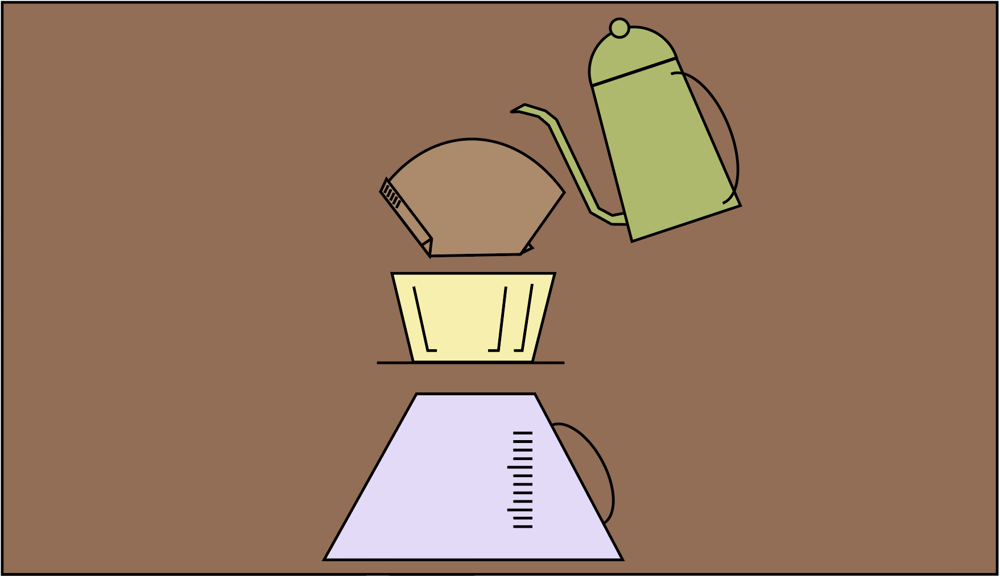
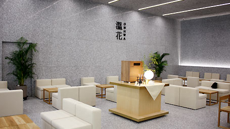
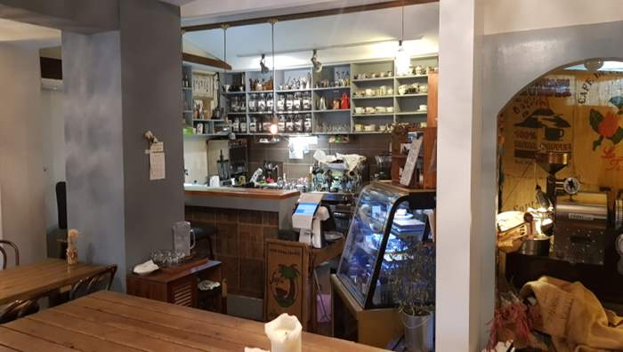

드립커피 슬슬 준비해볼까?
드립커피 용어를 알아보자
Bloom: 분쇄된 원두에 물을 부으면 커피가 부풀어 오른다. 이는 커피 로스팅 과정에서 발생한 이산화탄소가 물을 만나면서 커피 밖으로 나오면서 생기는 현상이다. 로스팅 과정에서 발생한 것이기에 신선한 커피 일수록 더 많이 부풀어 오를 수 있다. 또한 라이트 로스팅된 커피일수록 더 잘 부풀어 오른다. 이산화탄소로 부풀어 오르는 과정에서는 물의 흐름이 방해가 되기에 좋은 추출이 일어나기 어렵다. 때문에 커피를 추출할 때 ‘뜸 들이기’로 커피 안의 이산화탄소를 먼저 배출시키는 것이 좋다.
배전도: 커피를 로스팅한 정도에 따라 나뉘게 되는 등급을 일컫는 말. 강하게 로스팅 되면 강배전, 중간으로 로스팅되면 중배전, 약하게 로스팅 되면 약배전으로 나눠진다. 다만, 강배전 원두는 드립용으로 사용하기에는 탄맛이 강할 수 있다.
뭐가 필요하지?
갈려진 원두, 드립포트(주전자), 거름종이(필터), 드리퍼, 서버
나에게 맞는 도구를 선택해보자
드립포트: 핸드드립 전용 주전자. 원두에 물이 닿을 때 충격을 덜어주고 물의 흐름을 조절할 수 있도록 도와준다. 손에 알맞은 사이즈로 고른다. 몸통에 유연하게 붙어 위로 되어있는 것이 물을 조절하는데 익숙해지기 쉽다.
드리퍼: 커피를 추출할 때 쓰는 원뿔 혹은 사다리꼴 형태의 기구다. 깔끔하고 산미를 강조한 커피를 즐긴다면 물빠짐이 좋은 원뿔형의 드리퍼를, 안정적인 추출로 바디감 있는 커피를 선호한다면 드리퍼 안에 물이 오래 머무는 사다리꼴의 드리퍼를 선택한다. 드리퍼의 재질은 플라스틱, 유리, 금속까지 다양하다. 유리나 금속으로 된 드리퍼는 열전도율이 높아 충분한 예열이 필요하다. 열전도율이 낮은 플라스틱 제품이 여러모로 사용이 편리하다. 리브는 드리퍼 안쪽 면에 직선 또는 곡선으로 파여 있는 무늬를 말한다. 리브가 많고 길수록 물 빠짐이 좋다. 추출구는 드리퍼 바닥에 있는 구멍이다. 구멍이 세개인 것과 한개인 것으로 대별할 수 있는데, 추출된 커피가 통과하는 속도를 좌우하므로 맛에 영향을 준다.
거름종이: 거름 종이라고 써놓았지만, 실제로는 거름종이와 천으로된 거름망이 있다. 거름종이는 일회용으로 간편하게 사용할 수 있으며 천으로된 거름망은 빨아서 여러번 재사용이 가능하다. 또한 부드러운 맛으로 필터링 된다는 장점이 있다.
서버: 추출된 커피가 모이는 용기이다. 일반적으로 유리로 된 제품을 사용하는데 추출 속도와 양을 눈으로 확인 할 수 있기 때문이다. 계량컵도 서버로 손색이 없다.
나에게 완벽한 원두 선택하기
원두의 6대 요소-신맛, 단맛, 쓴맛, 아로마. 플레이버, 바디감 커피는 주로 적도에서 북위, 남위 25도 사이의 따뜻한 지역에서 자란다. 커피 이름은 대개 국가명을 따서 불리는데 산지역, 생산지. 출하항의 이름이 붙는 경우도 있다. 예-국가명: 브라질, 콜롬비아 등, 산지역:킬리만자로, 블루마운틴 등, 생산지: 만델린, 코나 등, 출하항: 모카 등 케냐AA : 상큼한 신맛과 향기로운 과일향, 꽃내음이 조화를 이룬 이국적인 풍미가 특징이다. 파푸아뉴기니 : 초콜릿과 단맛이 우수하며 바디감이 풍부하다 콜롬비아 : 견과류처럼 고소하고 부드러운 맛이 특징이다. 아라비카 : 단맛, 신맛, 감칠맛 등 다양한 맛을 느낄 수 있는 품종. 세계 커피 생산량의 70%를 차지한다. 로부스타 : 향미가 다소 투박하다고 간주되지만 에스프레소 샷 표면에 생기는 거품층을 더 풍부하게 만들어주는 품종이다.
드립커피 이제 내려보자!
필터를 접는다. 필터의 가장자리 점선을 따라 한 번 접어준다. 필터가 드리퍼보다 커서 5mm정도 여유를 갖고 접는 것이 좋다. 드리퍼를 서버나 컵 위에 얹고 접어둔 필터를 드리퍼에 얹는다.
뜨거운 물로 필터 전체를 적셔준다. 이를 린싱이라고 부르며 필터의 종이 맛을 없애고 드리퍼에 필터를 고정시키며, 드리퍼와 컵을 예열한다. 린싱한 물은 버린다. 마시고 싶은 커피의 양에 맞춰 간 원두 가루를 필터에 담는다. 일반적으로 커피 150ml를 낼 떄 10g의 원두가 필요하다. 원두가루에 물을 부은 다음 뜸을 들여 거품이 깨질 때까지 30초에서 1분간 기다려준다. 물을 조금씩 부어 커피를 추출한다. 추출 시간은 2-3분이 적당하다.
드립커피 잘내려진걸까?
뭐니 뭐니해도 내입에 맞으면 그것이 완벽한 한잔-! 신맛, 단맛, 쓴맛, 아로마. 플레이버, 바디감이 전체적으로 조화로운가? 추출한 커피 양에 맞는 원두의 양을 선택했는가? 원하는 맛을 내기위해 추출 시간, 온도, 원두 분쇄도, 로스팅을 선택했는가? 신맛은 추출시간을 2-3분으로 짧게, 온도는 낮게, 원두는 굵게 분쇄한 약배전 로스팅 쓴맛은 추출시간을 3-4분으로 길게, 온도는 높게, 원두는 가늘게 분쇄한 강배전 로스팅
드립커피 더 알아보기
드립커피 관련 서적 추천
 abc드립 멜리사와 원두의 드립 커피 배우기-인덱스
abc드립 멜리사와 원두의 드립 커피 배우기-인덱스
서울소재 드립커피 맛집
성수동-카페 온화
자양동-최가 커피